Router
Classifies the request and chooses a small skill set. It contains no domain workflow.
Modular agent instructions for software and web product work
A lightweight router selects only the skills required for the current phase. Each domain stays independent, human guides remain optional, and browser evidence closes the loop.
Architecture
The entrypoint is intentionally small. It identifies the phase, reads the registry, and returns a bounded route plan. Domain instructions are opened only after that decision.
Classifies the request and chooses a small skill set. It contains no domain workflow.
Records triggers, exclusions, phase, path, and pairing hints in machine-readable form.
Owns one type of work, defines its evidence, and hands off when the phase changes.
entrypoint: skills/router/SKILL.md
phase: implementation
primary:
- skills/interface-craft/SKILL.md
- skills/responsive-mobile/SKILL.md
supporting:
- skills/accessibility/SKILL.mdLoading policy
The system prevents recursive loading, avoids speculative references, and reroutes when work moves into a new phase.
Use no more than two primary skills and one supporting skill for a phase.
A domain skill cannot open another domain skill. It returns to the router.
Human documentation and screenshots never enter agent context automatically.
Turns requirements into one coherent visual thesis before implementation begins. It records the page archetype, composition, type roles, palette, density, imagery, and motion posture.
Starting a greenfield page, reconciling competing references, or repairing a visually incoherent interface.
A concise design read, explicit visual dials, and a written direction that implementation can test against.
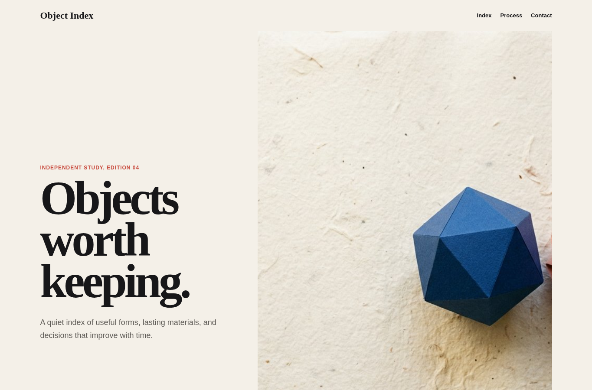
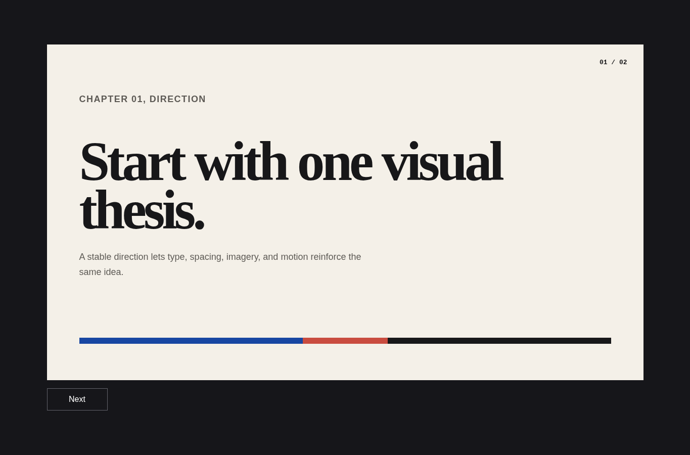
Turns references and product posture into semantic, accessible color roles. It defines light and dark theme logic, controls accent proportion, and verifies the rendered foreground and background pairs that carry content and state.
Selecting a palette, deriving tokens from references, pairing themes, repairing weak contrast, or separating brand and semantic colors.
A role-based token map, contextual palette family, complete state colors, measured component pairs, and explicit rejected alternatives.
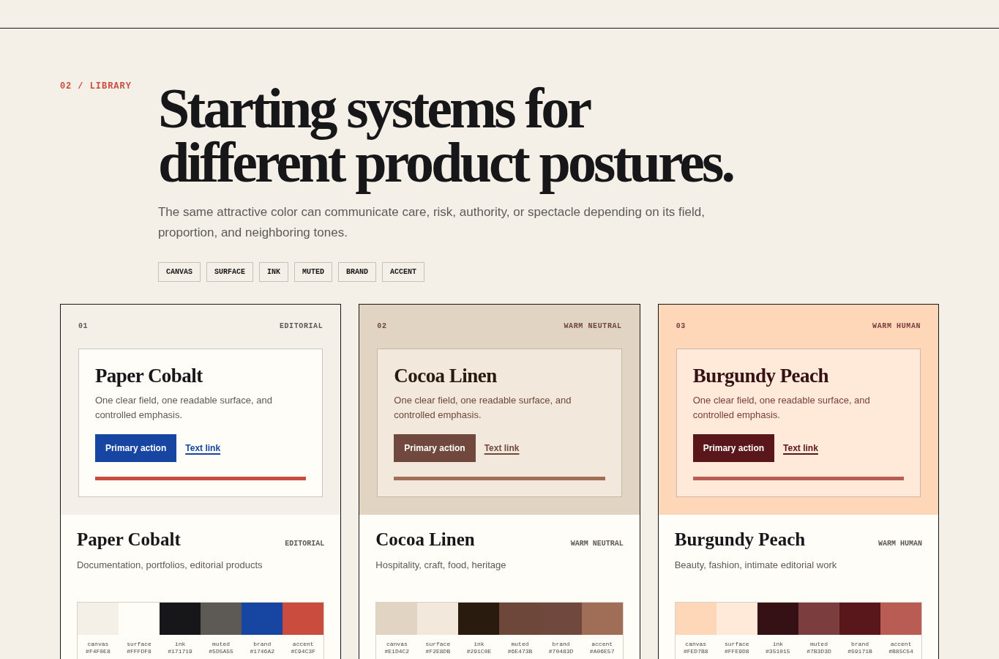
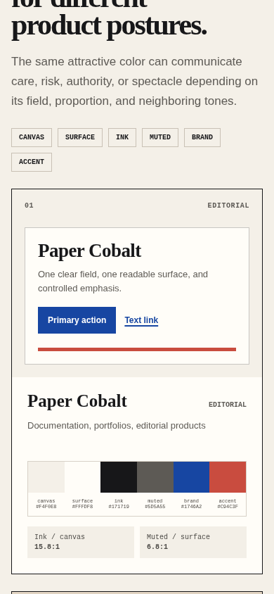
Builds interaction around real tasks and semantic controls. It favors explicit state, progressive disclosure, strong hierarchy, and the least complex implementation that preserves the intended experience.
Implementing forms, dashboards, navigation, filters, dialogs, empty states, or task flows.
A functional interface with defined states, visible feedback, semantic controls, and no decorative dead ends.
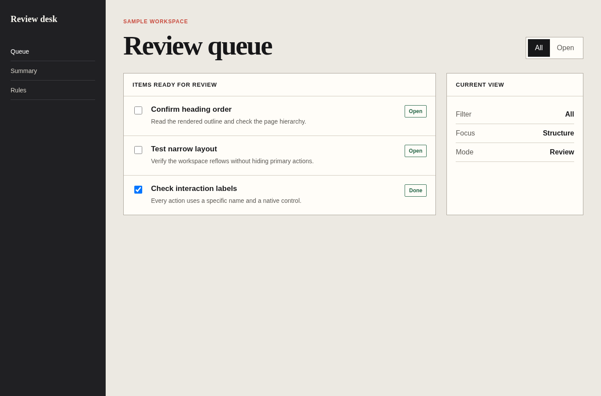
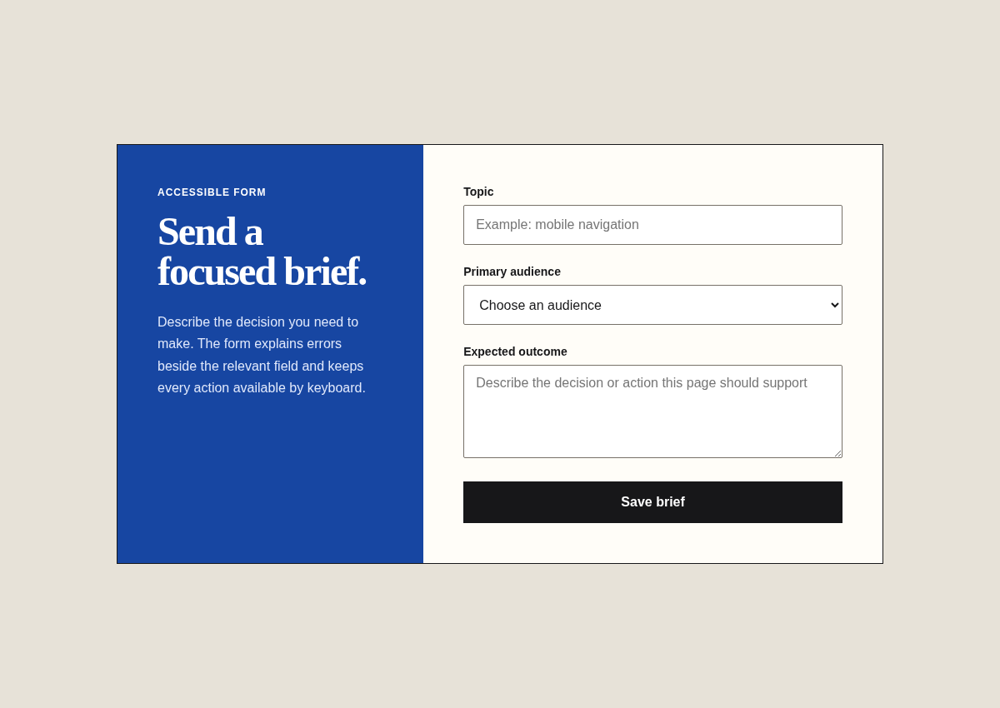
Designs narrow layouts as deliberate compositions rather than compressed desktop screens. It protects reading order, action reachability, touch targets, and overflow behavior.
Adapting a page across viewports, designing mobile navigation, or fixing clipping and hidden actions.
A mobile-first layout with explicit reflow rules and verified behavior near 400 CSS pixels.
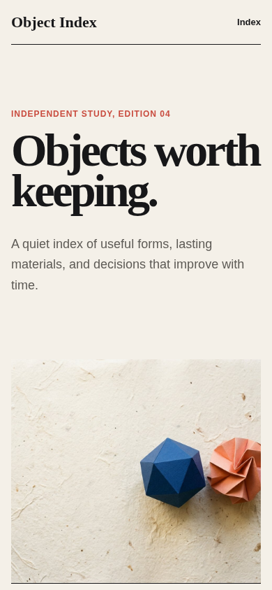
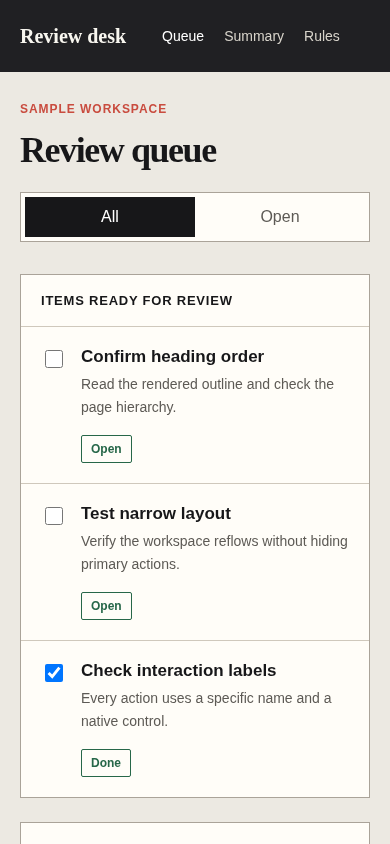
Integrates keyboard behavior, focus, semantics, names, instructions, error recovery, contrast, zoom, and motion preferences into implementation and review.
Building or auditing interactive UI, forms, media, navigation, dynamic updates, and custom controls.
Traceable findings with user impact, reproducible paths, and fixes applied at the correct layer.
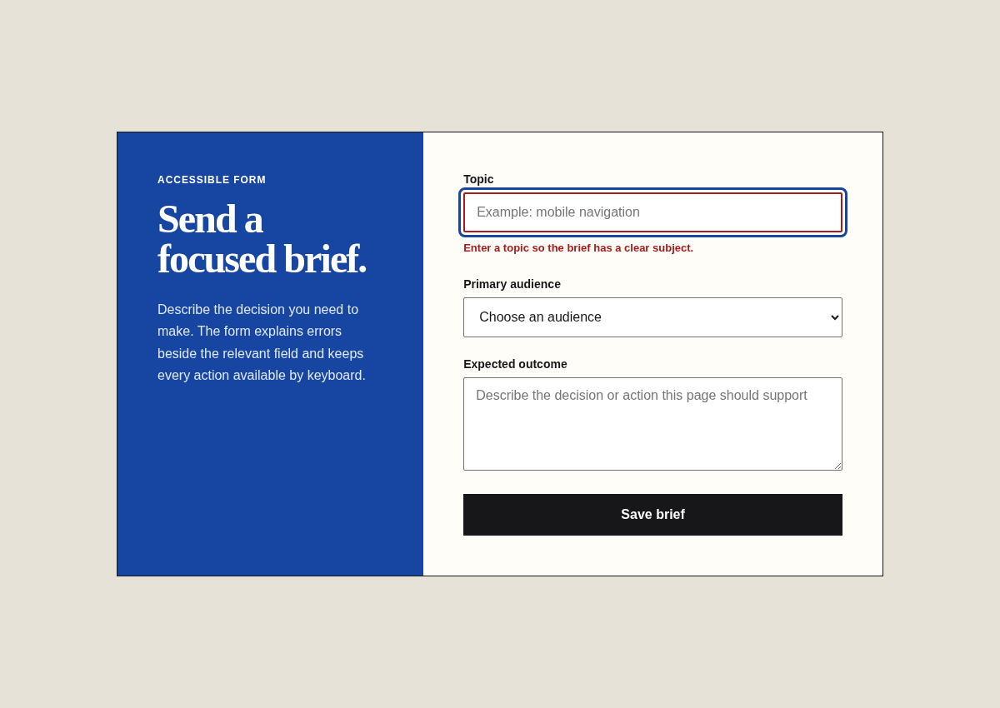
Writes interface and page copy from user intent, evidence, and product truth. It replaces generic slogans with specific language and never invents unsupported proof.
Writing headlines, instructions, labels, errors, onboarding, calls to action, empty states, or concise product explanations.
A message hierarchy, evidence-aware draft, state copy, and a clear record of missing facts.
Chooses, generates, prepares, and places imagery with a defined role. It protects provenance, avoids accidental cropping, and treats alt text and loading behavior as part of the asset decision.
A page depends on photography, illustration, diagrams, generated visuals, icons, or media optimization.
An asset brief, source record, prepared files, placement rules, alt text, and loading strategy.
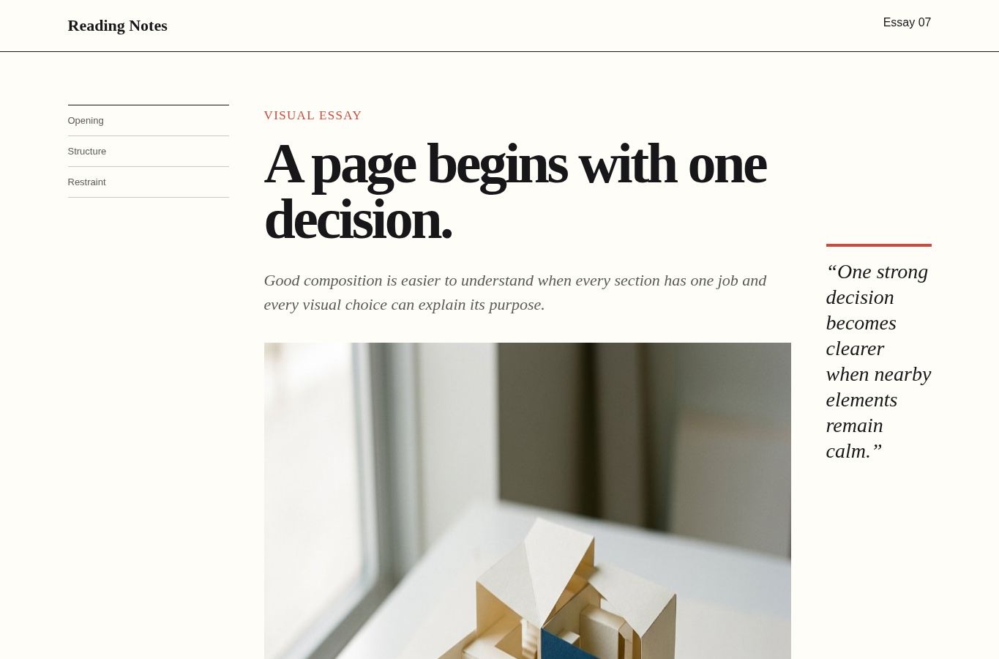
Measures before changing code, traces findings to likely causes, and verifies improvements under comparable conditions. Lab observations never masquerade as field evidence.
Investigating slow rendering, interaction delay, layout shift, bundle cost, media weight, or runtime work.
A reproducible baseline, prioritized hypotheses, minimal changes, and a before-and-after record.
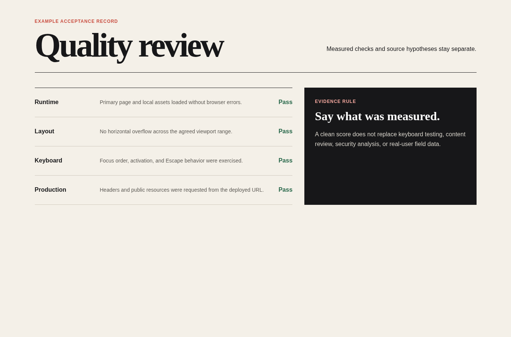
Reviews discovery, metadata, crawl behavior, resource integrity, sensitive data handling, dependency risk, and deployment headers without turning heuristics into guarantees.
Preparing public pages, changing routing or metadata, handling user input, adding dependencies, or reviewing production posture.
Verified metadata and security findings, risk-ranked fixes, and explicit limits on what was inspected.
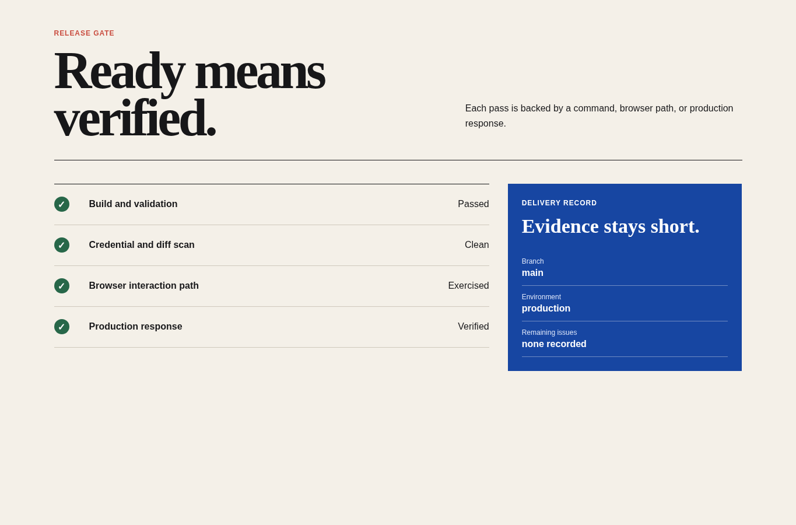
Exercises the real interface at representative viewports and states. It collects console, network, screenshot, keyboard, and interaction evidence before a page is declared ready.
A feature is implemented, a bug needs reproduction, or a release needs end-to-end proof.
Scenario-based acceptance records with viewport, path, expected result, actual result, and attached evidence.
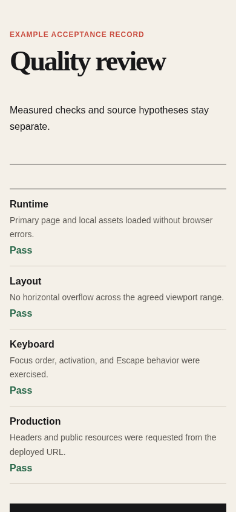
Moves a verified artifact into production while preserving repository hygiene, credential safety, rollback awareness, deployment configuration, and post-deploy smoke evidence.
Preparing commits, creating a repository, configuring automation, deploying a site, or handing work to another operator.
A clean diff, validated automation, deployment record, public URL, smoke results, and remaining issue list.
Navigates structured local material progressively, reads the smallest useful branch, preserves provenance, and separates direct evidence from synthesis.
Answering from a document corpus, extracting product facts, comparing local records, or grounding downstream copy and design.
A scoped evidence map with file, section, page, or sheet references and clearly labeled unknowns.
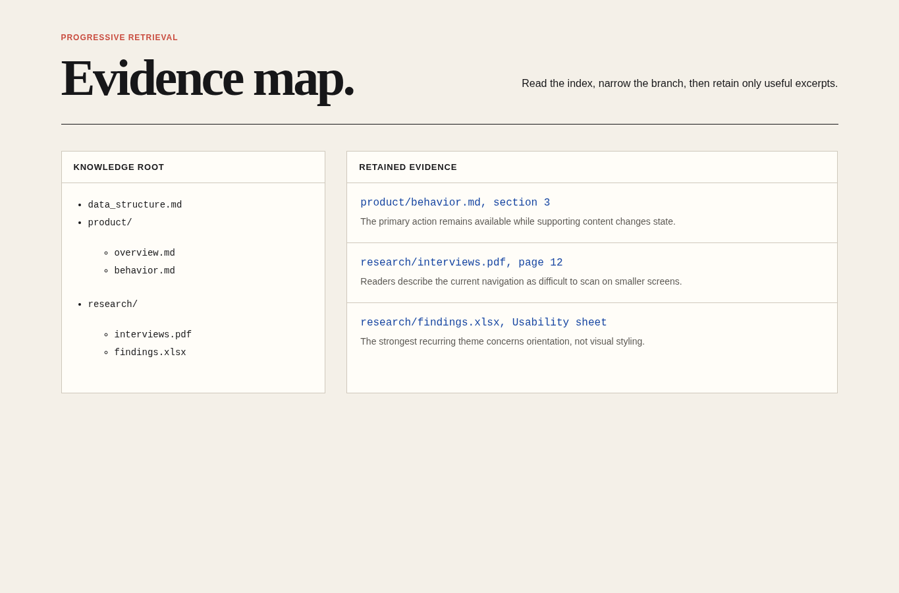
Shapes a long-form reading experience around argument, pace, hierarchy, figures, captions, references, and responsive typography.
Creating essays, explainers, research narratives, documentation chapters, or visual stories.
A structured article, reading hierarchy, figure plan, citation treatment, and a verified narrow layout.
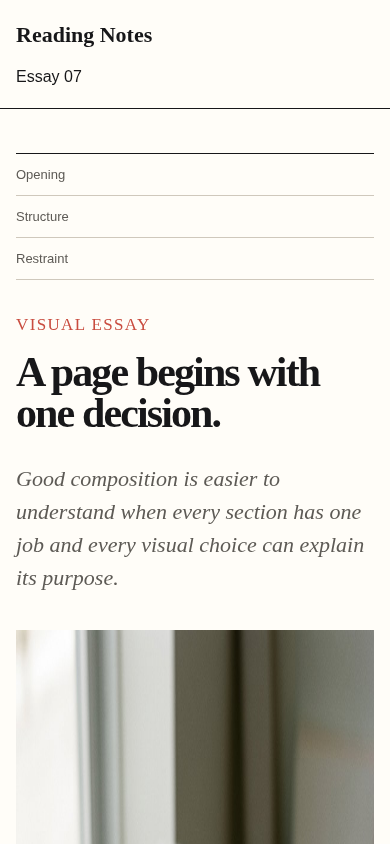
Builds slide-like experiences as stable web stages with deliberate sequencing, keyboard navigation, legible type, and bounded motion.
Creating talks, product narratives, interactive decks, teaching sequences, or kiosk presentations.
A slide outline, stable stage, routeable states, working controls, and tested aspect-ratio behavior.
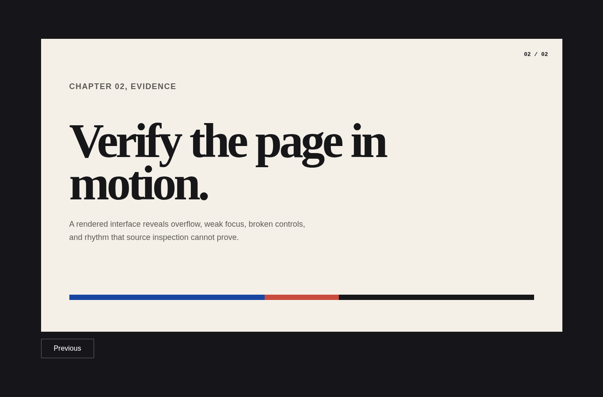
Plans short visual sequences through beats, transitions, typography, framing, timing, and export constraints. Motion remains purposeful and compatible with reduced-motion preferences.
Creating title sequences, launch reels, product motion studies, animated case-study moments, or concise brand films.
A beat sheet, style frames, timing plan, transition rules, reduced-motion path, and export checklist.
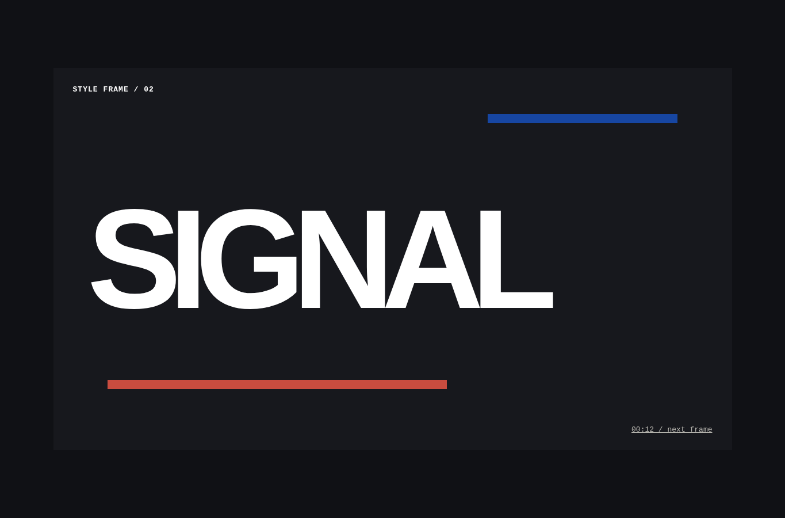
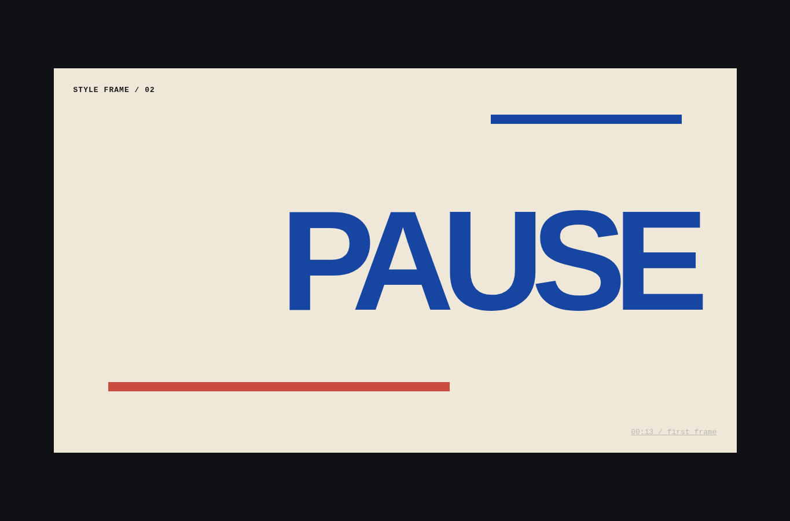
Keeps software work scoped, truthful, maintainable, and evidence-based. The module grew from repeated project experience with many coding agents and was refined through practical research and testing.
Scope drift, fabricated facts, noisy generated code, weak context continuity, or an unverified completion claim is a material risk.
A bounded implementation, verified facts, proportionate checks, and a compact report separating evidence from unknowns.
Prevents generic, fabricated, inaccessible, or mechanically templated browser output while keeping content, composition, mobile behavior, and interaction specific to the product.
A website looks machine-generated, contains unsupported proof, includes decorative filler, or has incomplete controls and responsive states.
A specific content hierarchy, coherent composition, working interaction states, deliberate mobile layout, and browser evidence.
Builds and repairs APIs, backends, bots, scripts, and command-line tools without guessed library calls, unsafe live actions, hidden failures, or careless secret handling.
Work touches a non-browser runtime, external service, messaging platform, destructive action, native dependency, or runtime defect.
A verified runtime contract, guarded side effects, minimal dependencies, protected secrets, causal repair, and failure-path evidence.
Proves software behavior through proportionate executable checks for websites, APIs, backends, bots, scripts, and command-line tools before a completion claim.
A change enters acceptance, a defect needs before-and-after reproduction, or the project has no clear test plan for changed behavior.
A verification contract, success and failure paths, exact commands, observed results, inspected artifacts, and named limits.